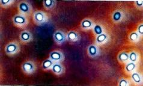
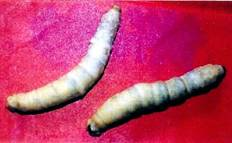
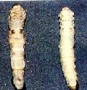
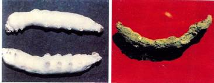
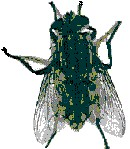

|
|
Threats
Mulberry silkworms are threatened by
4 silkworm diseases viz., pebrine,
grasserie, flacherie and muscardine and one silkworm pest known as uzi fly.
(a) Silkworm Diseases
1) Pebrine: It is a chronic disease
transmitted to offspring by
transovarian  transmission of microsporidian, Nosema bombycis and
strains of Nosema sp. NIK-2r NIK – 3h and NIK=4 m from mother
moth. The affected larvae loose
appetite, retard in growth, shrink in size and become flaccid. For effective
management, scientific processing and
inspection of mother moth for pebrine during silkworm egg production besides
maintenance of hygiene during silkworm rearing are very important. Application of bed disinfectant Vijetha has
also been found very effective.
2) Grasserie (Nuclear polyhedrosis): It is a major viral disease
caused by NPV, a baculovirus and is more
intense during summer and
rainy seasons.  The skin of the infected
larvae become shiny before moulting and the larvae fail to moult, the
integument becomes fragile & the inter segmental regions become
swollen. Thorough disinfection of
silkworm rearing house, surroundings, rearing appliances and silkworm egg
surface are recommended for management of the disease. In case of high incidence, a spray of 0.3%
slaked lime solution in addition to usual disinfection is advocated. Application of bed disinfectant as per the
recommended schedule and quantity has also been found effective.
 3) Flacherie: Flacherie is
associated with infectious
flacherie densonucleosis cytoplasmic
polyhedrosis. It is more prevalent
during summer and rainy seasons. The infected larvae show unequal growth,
loose appetite and move away from the feed. Control measures include thorough
disinfection of silkworm rearing house, surroundings, rearing appliances and
silkworm egg surface, maintenance of hygienic condition during silkworm
rearing and application of bed disinfectants.
4) Muscardine and Aspergillosis: Muscardine and Aspergillosis are fungal
diseases of silkworm
and prevail during
winter and rainy
seasons. White muscardine is caused by a fungus, Beauveria
bassiana, while Aspergillosis is caused by Aspergillus flavus, A.
oryze and A. tameri.
 The infected
larvae loose appetite, become inactive and on death gradually become harder
and finally mummified. The fungus grows over the larvae and produce conidia
on the surface giving white colour. Aspergillosis generally infects early
instar silkworms which become inactive and die without any morphological
symptoms. Thorough disinfection of silkworm rearing house, surroundings,
rearing appliances and silkworm egg surface and dusting of 1-2% (1% for 1st and
2nd instars 2% for 4th and 5th instars) of
Dithane M45 mixed with Kaolin or Capton in slaked lime on silkworm body @ 3-5
g/sq.ft. immediately after each moult and on 4th day of 5th
instar are important control measures.
(b) Silkworm pest
Uzi fly, Exorista
bombycis: The uzi fly (Diptera : Tachinidae) is a serious endo-  larval parasitoid of the silkworm, Bombyx mori L. and is
estimated to cause around 10-20% crop
loss. Though it occurs throughout the year, maximum incidence is from August
to November. Black scar on the body of parasitized silkworm is the main
symptom. Maggot emerges out by
piercing through either the larvae or pupa. Covering window and doors with
nylon/ iron mesh in the rearing houses, use of Uzitrap (a chemotrap) for
attracting and killing the adults and application of Uzicide(liquid
formulation ) or Uzi powder are some of the important control measures.
Back
|